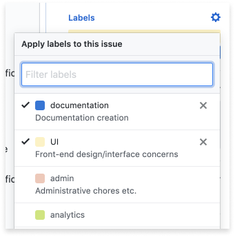

Issue Sections: Descriptions and Tips
Follow the recommendations below to create a useful end-to-end GitHub issue
You can either format with markdown text manually or using the text box toolbar
TITLE
Describe what you’re working on —
For a start-to-finish issue, as in this case, choose a title that is generic enough to allow for all phases (research, ideation, design, development).
For an issue taking on only part of the workflow, be more declarative in what it covers (e.g. a research issue might be called “Determine Best Testing Library for Code Base”).

OVERVIEW
Clearly state the purpose of this issue in 2 lines or less.
Markdown draft: ### formats header
DEPENDENCY
(if applicable)
If your issue relies on another issue’s completion first, link to the issue it is dependent on.
Markdown draft: [title](url) formats links
ACTION ITEMS
Formatted as a clickable checklist.
If this is the beginning of the task, this is most likely something to be researched and documented.
When the research is complete, what will happen next? Describe the steps in your checklist (broadly, if the research will change the details).
If the steps can be divided into tasks for more than one person, we recommend dividing it up into separate sections.
Markdown draft: - [ ] formats checklist
Final post with checkmarks
RESOURCES / INSTRUCTIONS
If there is a link with documentation that helps with this issue, provide the link(s) here.
RESUME
Specify how tasks can be listed in all assignees’ resumés to provide value for project volunteers, divided by roles.
ASSIGNEES
Select assignees to clarify who is working on specific issues and pull requests.
In the upper-right corner, click Assignees. To assign a user (including yourself), start typing their username and click their name when it appears.
Assign the issue to only one person at a time, by order of their tasks.
LABELS
Select all relevant labels. See GitHub’s About Labels guide for more details.

PROJECT BOARD
Make sure your issue is added to your team’s Project Board, and properly triaged. Click here to learn more.
If the issue has been created but is not ready to assign, it should be set in the ice box.
If the issue has been created and is ready but not yet assigned to someone, it should be set in prioritized backlog.
When someone has been assigned to the issue, this should be set to in progress.
MILESTONES
You can use milestones to track the progress of groups of issues or pull requests in a repository. Read more at GitHub’s About Milestones guide.
TIP:
PREVIEW
Don’t forget to preview your new issue before posting to make sure it’s formatted correctly.